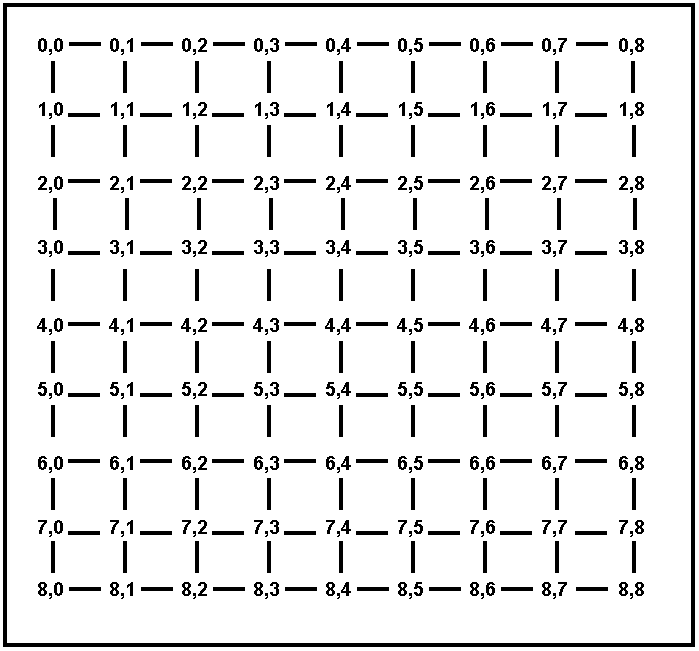

Due date: Monday 09/10/2012 Wednesday 09/12/2012, 11:59pm.
The assignment should be submitted via Blackboard.
Question 1
Max: 25 Points
Consider the search tree shown in Figure 1. The number next to each
edge is the cost of the performing the action corresponding to that
edge. List the order in which nodes will be visited using:
breadth-first search.
depth-first search.
iterative deepening search.
uniform cost search.
Figure 1: Search Tree for Problem 1
Question 2
Max: 50 Points
A social network graph (SNG) is a graph where each vertex is a
person and each edge represents an acquaintance. In other words, an SNG
is a graph showing who knows who. For example, in the graph shown on
Figure 2, George knows Mary and John, Mary knows Christine, Peter and
George, John knows Christine, Helen and George, Christine knows Mary
and John, Helen knows John, Peter knows Mary.
The degrees of separation measure how closely connected two people are
in the graph. For example, John has 0 degrees of separation from
himself, 1 degree of separation from Christine, 2 degrees of separation
from Mary, and 3 degrees of separation from Peter.
From among breadth-first search,
depth-first search,
iterative deepening search, and uniform cost search, which one(s)
guarantee finding the correct number of degrees of separation between
any two people in the graph? (10 Points)
For the SNG shown in Figure 2, draw the
first three
levels of the search tree, with John as the starting point (the first
level of the tree is the root). Is there a one-to-one correspondence
between nodes in the search tree and vertices in the SNG? Why, or why
not? In your answer here, you should assume that the search algorithm
does not try to avoid revisiting the same state. (10 Points)
Draw an SNG containing exactly 5 people,
where at least
two people have 4 degrees of separation between them. (10 Points)
Draw an SNG containing exactly 5 people,
where all
people have 1 degree of separation between them. (10 points)
In an implementation of breadth-first
search for
finding degrees of separation, suppose that every node in the search
tree takes 1KB of memory. Suppose that the SNG contains one million
people. Outline (briefly but precisely) how to make sure that the
memory required to store search tree nodes will not exceed 1GB (the
correct answer can be described in one-two lines of text). In your
answer here you are free to enhance/modify the breadth-first search
implementation as you wish, as long as it remains breadth-first (a
modification that, for example, converts breadth-first search into
depth-first search or iterative deepening search is not allowed). (10
Points)
Figure 2: A Social Network Graph
Question 3
Max: 25 Points
Figures 3 and 4 show maps where all the towns are on a
grid. Each town T has coordinates (Ti, Tj), where Ti Tj are
non-negative integers. We use the term Euclidean distance for the
straight-line distance between two towns, and the term driving distance
for the length of the shortest driving route connecting two towns. The
only roads that exist connect towns that have Euclidean (straight-line)
distance 1 from each other (however, there may be towns with Euclidean
distance 1 from each other that are NOT directly connected by a road,
for example in Figure 4).
Consider greedy search, where the node to be expanded is always the one
with the shortest Euclidean distance to the destination. Also consider
A* search, where h(n) is the Euclidean distance from n to the
destination (remember that the next node is picked not based on h(n)
but based on f(n) = g(n) + h(n)). For each of the maps showing on
Figures 3 and 4, which of the following statements is true?
Greedy search always performs better than or the same as A*.
Greedy search always performs worse than or the same as A*.
Greedy search performs sometimes better, sometimes worse,
and sometimes
the same as A*, depending on the start and end states.
Justify your answer. For the purposes of this question, the performance
of a search algorithm is simply measured by the number of nodes visited
by that algorithm. Note that you have to provide separate answers for
Figure 3 and for Figure 4.

Figure 3. A map of cities on a fully connected grid. Every city is
simply named by its coordinates.
Figure 4. A map of cities on a partially connected grid. Every city is
simply named by its coordinates.
Other Instructions
The answers can be typed as a document or handwritten and
scanned.
Accepted document formats are (.pdf, .ps, .doc,
.docx). Please do not submit
.txt files. If you are using OpenOffice or LibreOffice, make sure to
save as .pdf or .doc
If
you are scanning handwritten documents make sure to scan it at a
minimum of 600dpi and save as a (.pdf, .png or .jpeg file).
If there are multiple files in your submission, zip them
together and submit the .zip file.